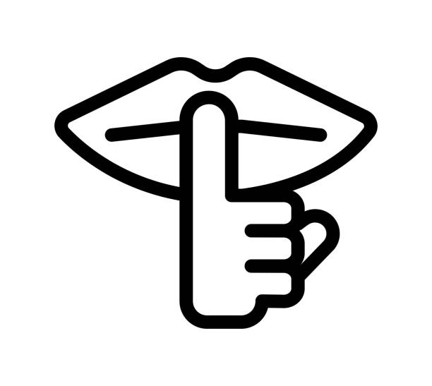

Poems
Poema 1: Luz entre los cables
En la pantalla brilla el día,
donde el código se hace poesía.
Cada línea un pensamiento,
cada error, un sentimiento.
El cursor parpadea y espera,
una idea que sincera prospera.
Entre bits y sueños dormidos,
nacen mundos desconocidos.

Poema 2: Silencio digital
El teclado calla un instante,
solo se oye el aire vibrante.
El monitor guarda secretos,
de mil proyectos incompletos.
En el fondo del sistema,
vive una duda, un poema.
Y el alma del programador,
busca siempre un nuevo error.

Poema 3: Noches de código
Bajo la luna y el ruido leve,
mi mente escribe, el sueño se atreve.
Las teclas bailan sin dirección,
persiguiendo un eco, una conexión.
En cada “commit” dejo un deseo,
en cada fallo, un titubeo.
Y aunque el sol no espere afuera,
mi código brilla a su manera.
Poema 4: Entre ceros y unos
Soy parte máquina, parte emoción,
vivo en lógica y contradicción.
Entre ceros y unos respiro,
la verdad que yo mismo admiro.
Porque en la frialdad del sistema,
late humana mi condena.
Ser creador y ser creado,
por mi mente programado.
Poema 5: El reinicio
Cuando el caos se hace rutina,
y la mente ya no camina,
presiono “Restart”, respiro hondo,
y vuelvo a enfrentar el mundo.
Cada error trae enseñanza,
cada bug, una esperanza.
Reiniciar no es rendirse,
es volver a construirse.
Poema 6: Futuro en código
Entre líneas de un lenguaje nuevo,
se escribe el futuro que muevo.
La IA escucha, el mundo gira,
el cambio nace, la mente inspira.
Ya no temo al porvenir,
porque sé que puedo construir.
Con código, arte y corazón,
doy al mundo mi versión.
Poema 7: La ruta del soñador
Camino entre rutas inciertas,
con puertas que nunca sé si están abiertas.
La vida compila sin avisar,
y yo solo intento no fallar.
Pero en cada paso encuentro calma,
un pequeño avance, una nueva alma.
Y aunque el sendero sea retador,
sigo adelante, siempre soñador.
Poema 8: Fragmentos del viento
El viento trae voces pasadas,
memorias suaves, casi olvidadas.
Las deja caer como hojas al suelo,
cada una un secreto, un duelo.
Recojo solo las que me llenan,
las que transforman lo que en mí suena.
Y así, con fragmentos del viento,
armo mi propio pensamiento.
Poema 9: Horizonte posible
Miro el horizonte sin prisa,
mientras el sol mi sombra suaviza.
Allí donde el cielo se une al instante,
nace mi sueño más constante.
No importa lo lejos que parezca estar,
cada día logro un poco más llegar.
Porque todo lo que imagino y persigo,
ya camina silencioso conmigo.